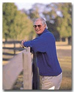
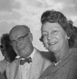
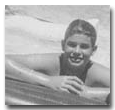
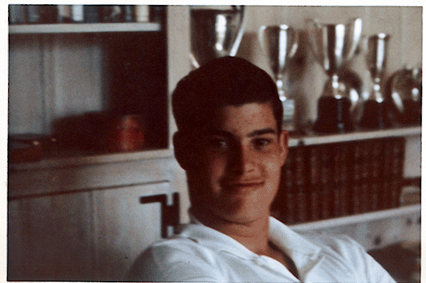
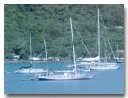
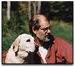
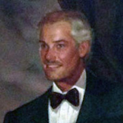

|  | ||
| Allen Douglas Henderson | ||
| March 9, 1946 | Born in New York City. The son of Alexander Dawson Henderson Jr. and Lucia Maria Ernst. |
 Alex & Lucy |
| 1946 | The Henderson family moved from New York City to Fort Lauderdale, Florida. | |
| 1953 | Doug attended the Hillsboro Country Day School in Pompano Beach, Florida. His father was the administrator and founder of the school. | |
| August 10, 1955 | At age 9, Doug was listed as a passenger with his parents coming from Honolulu, Hawaii to San Francisco on the S.S. Lurline. Source: List of Inward-Bound Passengers. | |
| 1959 | The A.D. Henderson Foundation was founded by his parents. The Foundation continues to support efforts furthering the goals of family planning, affordable day care and education for all children. The Foundation provides ongoing grants in South Florida and Vermont. |  Doug Henderson |
| 1964 | Douglas Henderson graduated from the Saint Andrew’s School in Boca Raton, Florida. | |
| July 9, 1964 | His father died at the Massachusetts General Hospital in Boston, Massachusetts. | |
| November 12, 1966 |
Doug married Cassandra Northwayat at the St. Martin's in the Fields Episcopal Church in Pompano Beach, Florida. The reception was at his wife's parents home. Source: Florida Marriage Collection, 1822-1875 and 1927-2001. |
 Doug Henderson |
| June 3, 1967 |
Lucia Angeline Henderson was born. |
|
| December 1, 1968 |
Doug's mother, Lucy E. Henderson, made a gift to the State and Florida Atlantic University to establish the Alexander D Henderson University School in Boca Raton, Florida. |
|
| September 2, 1970 | Doug divorced Cassandra Northwayat in Broward County, Florida. Source: Florida Divorce Index, 1927-2001. | |
| 1974 | Doug developed the Marablue Farm. The farm covers over 275 acres in Reddick, Florida. |
Tactical Advantage |
| Doug owned the Beowulf Restaurant in Lighthouse Point and formerly of the New York Mets. | ||
| 1975 | Proud Birdie was purchased by Doug for $21,000 at the first Ocala Breeders' Sales Company sale of 2-year-olds in training sale. Proud Birdie entered stud at Marablue Farm in 1979. His big win came in the Marlboro Cup, but he also won four other stakes, including the Everglades Stakes. Proud Birdie retired with nine wins from 35 starts and earnings of $324,842. Source: Bloodhorse.com May 6, 2003; Wikipedia.com 2011. | |
|
Tactical Advantage is one of the race horses at the Marablue Farm in Ocala, Florida. |
||
|
Bought and expanded his home in Ft. Lauderdale, Florida. |
 Doug's Sailboat "Pet" |
|
| December 4, 1982 | Doug married his second wife, Barbara Kay Farsang in Broward County, Florida. Source: Florida Marriage Collection, 1822-1875 and 1927-2001; Certificate #103163. | |
| Doug bought a farm in Brattleboro, Vermont. The farm produces Vermont Gold, distinctive maple & gourmet food products. | ||
| His daughter, Lucia Angeline Henderson, married Adam Lavesque of Cambridge, Massachusetts. | ||
| 1995 | The Marablue Farm became a commercial operation. |
 Doug & Nelson |
| May 1997 | Doug and Barbara were divorced in Broward County, Florida. Source: Florida Divorce Index, 1927-2001. | |
| July 17 1999 | Kiwi Mint, by Key to the Mint won a 1-1/16 m. turf allowance at Monmouth, his second win in a row and second win from three career starts. Owner: Marablue Farm. | |
| January 2000 | Doug's sailboat the "Pet" has sailed around the world. It is pictured here in Tortola, Virgin Islands. | |
| May 2, 2003 | Proud Birdie, who won the 1977 Marlboro Cup Handicap and sired 33 stakes winners, was euthanized May 2 because of complications from the infirmities of old age. Proud Birdie, age 30, was buried in a scenic wooded area at the Marablue Farm near Reddick, Florida. Source: Bloodhorse.com May 6, 2003. |
 Doug Henderson |
| May 12, 2005 | Doug and his lady friend Melinda bought a 90 year old 3400 sq. ft. English Tudor house, which they have restored. | |
| May 20, 2005 | Doug sold his 180-acre Marablue Farm near Reddick, Florida., to Eddie Martin Jr., principal owner of Martin Stables South. | |
| 2012 | Doug bought a ranch-style house in Rancho Santa Fe in San Diego County, California. |

Last update: March 4, 2026